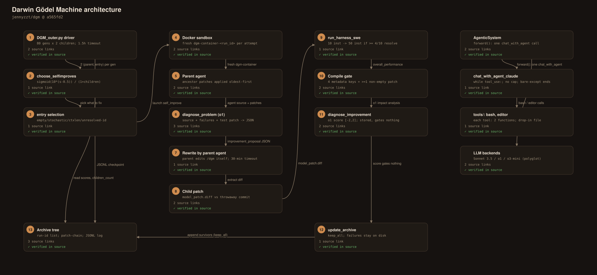

Agent Harness Anatomy #13: Darwin Gödel Machine — the agent that rewrites itself
Series: Agent Harness Anatomy — top-down dissections of real agent
harnesses, grounded in verifiable source code. Every behavioral claim
below carries a footnote to a pinned GitHub permalink; the full evidence
lives in the endnotes.
Version block
- Repo: jennyzzt/dgm
- Pinned:
main@a565fd2d1dca504ef5104a7cc0f3bdc4ab9b4fd2(2025-08-13) - Language: Python
- License: Apache-2.0
- Claim under test: "the agent that rewrites itself" — an open-ended
evolutionary loop that rewrites a coding agent's own source
Size, for orientation: 39 Python files, ~9,410 lines in a flat repo — no packages, no framework. The big files are llm_withtools.py (553), self_improve_step.py (447), prompts/self_improvement_prompt.py (468), llm.py (359), DGM_outer.py (336), and swe_bench/harness.py (295). Line counts include blanks and comments — order of magnitude, not precision instruments. Pinning caveat up front: the paper's v3 (2026-03-12) postdates this pin (2025-08-13), so paper claims may describe code that isn't here — flags are in the endnotes.120

Explore the interactive architecture diagram 17 nodes, 17 edges — pan, zoom, and follow every subsystem linkThe mental model
DGM is two nested loops, not one agent. The outer loop is a fixed, hand-written evolutionary driver: it keeps an archive (a tree) of coding-agent versions, samples a parent, and asks a foundation model to (a) diagnose why the parent failed on a benchmark task and (b) rewrite the agent's own code to fix it. The inner loop is the thing being evolved: a deliberately simple single-shot coding agent — one forward() wrapping a native tool-calling loop with exactly two tools (bash and editor). Each candidate child is validated on staged SWE-bench subsets; if it compiles (produces the expected non-empty patches) it joins the archive. Parent sampling is score-proportional with an exploration discount for under-exploited nodes. That — a tree archive plus score-weighted, exploration-bonus sampling — is the entire operational content of the "Darwinian, open-ended, not greedy hill-climbing" claim, and it lives in about a hundred lines of DGM_outer.py.278
The Gödel-machine-style "rewrite your own code" step is real but one level deep: the outer driver, the diagnoser model and its prompts, and the benchmark machinery are fixed; only the inner coding agent is rewritten. The single genuinely recursive mechanism is subtler: the rewrite is performed by the current parent agent itself — a better coder literally becomes a better self-editor. That is the entire "improves its ability to improve" mechanism, and it is real.1320
The outer loop
Entry point: main() in DGM_outer.py. The defaults that matter:
| Arg | Default | Meaning |
|---|---|---|
--max_generation | 80 | generations of the evolution loop |
--selfimprove_size | 2 | children (self-improvement attempts) per generation |
--selfimprove_workers | 2 | parallel self_improve workers |
--choose_selfimproves_method | score_child_prop | parent-sampling strategy |
--update_archive | keep_all | archive admission policy |
--num_swe_evals | 1 | repeated evals per child (stochasticity control) |
--eval_noise | 0.1 | score leeway for the keep_better policy |
--run_baseline | None | no_darwin / no_selfimprove ablations |
Control flow per generation:
- Choose attempts —
choose_selfimproves()returns `(parent_commit,
entry) pairs, where entry` is what to improve (next section).
- Run children in parallel — a
ThreadPoolExecutor(max_workers=2)
submits one self_improve(...) future per pair, each with a 1.5-hour timeout. Timeouts are cancelled and logged, other exceptions logged — a generation never hard-fails on one bad child.
- Compile filter —
filter_compiled()keeps only children whose
metadata.json passes the compile gate (§Evaluation).
- Archive update —
update_archive()appends survivors per the
admission policy.
- Checkpoint — one JSON line per generation appended to
output_dgm/<run_id>/dgm_metadata.jsonl: generation, attempts, children, compiled children, full archive list. This file is the entire persistent state of the evolution; resuming (--continue_from) just reloads the last line's archive and generation number.3
run_id is a wall-clock timestamp, so every child directory is <YYYYMMDD_HHMMSS_ffffff>/ — lineage is by directory name plus the parent_commit field in each child's metadata.json, not by git. (The in-container git repo is a throwaway: changes are committed with the message "a nonsense commit message" purely to isolate the child's diff.)4
A real bug, verified in the source: the argparse choices list reads ['random', 'score_prop', 'score_child_prop' 'best'] — a missing comma concatenates the last two into 'score_child_propbest'. The default still parses, but passing --choose_selfimproves_method best (or score_child_prop) explicitly on the command line would be rejected — so the best sampling branch is unreachable from the CLI at this pin.4
The inner loop
AgenticSystem (coding_agent.py:60-168) is strikingly thin. __init__ stores the problem statement, repo dir, and base commit, and sets self.code_model = CLAUDE_MODEL, wired to Bedrock Claude 3.5 Sonnet. (The polyglot track differs: the polyglot self-improver runs on o3-mini; the SWE agent always runs on Sonnet, including during self-improvement.)10
forward() is a single call to chat_with_agent with a fixed instruction template ("I have uploaded a Python code repository in the directory … make changes to the files …"). No planner, no reflection, no retry at this level — all multi-step behavior lives inside chat_with_agent's tool loop. After forward() returns, main() diffs the repo against base_commit (including untracked files, via diffing against /dev/null) and writes model_patch.diff. The patch file is the agent's entire output — no structured result object.10
The actual agentic loop is chat_with_agent_claude (llm_withtools.py): one messages.create with tool_choice={"type": "auto"}, then while tool_use: — execute, append tool_result, repeat. No max-step cap. Termination: (a) the model stops calling tools, (b) the 9-hour timeout on the container exec in the eval harness, (c) the 30-minute timeout 1800 on self-improvement runs, or (d) an exception — swallowed by a bare except Exception:, returning whatever history accumulated. Transient API errors get exponential-backoff retries plus up to 3 manual retries; a context-length error string is detected to trigger the solve_contextlength diagnosis path.11
Two methods on AgenticSystem are dead code: get_regression_tests and run_regression_tests have no callers anywhere in the repo (verified by grep). The shipped agent never runs regression tests on its own work; test-running happens only via its own bash use and officially in the external harness — score_tie_breaker's only in-repo caller is the dead test-runner. Model surface: ~20 supported models listed, but the wired-in choices are narrow — Sonnet for the inner agent, o1-2024-12-17 for the diagnoser, o3-mini for the polyglot self-improver. MAX_OUTPUT_TOKENS = 4096; temperature 0.7 for plain calls.12

The archive is the thesis
Storage. The archive is a plain Python list of run-id strings, starting as ['initial'], checkpointed to dgm_metadata.jsonl after every generation. Each member is a directory output_dgm/<run_id>/<child_id>/ with metadata.json (run_id, parent_commit, entry, problem_statement, overall_performance, …), model_patch.diff, self_evo.md (the full self-modification chat log), self_improve.log, and predictions/. A child's full code is never stored — only its diff against its parent; the complete agent at any node is rebuilt by walking the parent_commit chain back to initial and applying patches oldest-first with patch -p1.56
Parent sampling — the "Darwin" in DGM. choose_selfimproves builds a candidate table from each member's metadata.json: score, resolved/unresolved/empty-patch id lists, and a children_count incremented per archived child (broken metadata is skipped with a warning). The default score_child_prop weights each node by sigmoid(10·(score−0.5)) · 1/(1+children), sampled with random.choices — high scorers are preferred, but heavily-exploited nodes are discounted, an explicit exploration bonus for under-exploited branches. Sampling is with replacement, so one parent can spawn multiple children per generation. Variants: score_prop (no children discount), random, best (top-k — CLI-unreachable at this pin, see the argparse bug), and the no_darwin baseline (always the most recent member: a linear chain with no branching).7
Archive vs. hill-climbing — the key distinction, grounded. Default keep_all: every compiled child joins the archive regardless of score — including children worse than their parent. This is what makes the tree branch into currently-weak lineages: stepping stones, not hill-climbing. keep_better admits children with score >= initial_score − 0.1 (eval_noise) — not parent-relative hill-climbing either; the bar is the seed's score minus leeway. True greedy hill-climbing (keep only children that beat their parent) does not exist as an option. The word "interesting" never appears in the codebase (verified by grep) — the operational definition of a worthwhile lineage is exactly the sampling weight: high sigmoid(score) × low children count.8
What the child is asked to fix. One of four entries per chosen parent: 25% solve_empty_patches (if ≥10% of tasks yielded empty patches), 25% solve_stochasticity, 25% solve_contextlength (if the context-length error appeared twice), otherwise a random unresolved instance id — and a parent that resolved everything is skipped, yielding fewer children than selfimprove_size. (Polyglot: entry = random choice over empty+unresolved ids.)9

One child, end to end
One self_improve() call — the parent→child transition, the atomic unit of this harness:
① Spin up a sandbox. A fresh Docker container is built and started per attempt (dgm-container-<run_id>). ② Materialize the parent by applying all ancestor patches from initial in order with patch -p1 (polyglot runs first swap the polyglot agent file in and delete SWE-only files). ③ Isolate the diff: git add --all plus a throwaway commit, so the child's model_patch.diff captures only this attempt's edits.
④ Diagnose (the "propose" half). diagnose_problem sends the o1-2024-12-17 diagnoser a system prompt with the full current source of the coding agent plus the failure evidence, demanding a JSON response with log_summarization, potential_improvements, improvement_proposal, implementation_suggestion, and problem_description (up to 3 extraction retries).
⑤ Rewrite (the "implement" half). The problem description is handed to a fresh instance of the current (parent) coding agent running inside the container against /dgm itself — it edits the live codebase with its bash/editor tools under a 30-minute timeout; afterwards model_patch.diff is extracted and copied to the host.
⑥ Validate on staged benchmarks (next section), then optionally post-diagnose: diagnose_improvement has o1 compare before/after logs and patches, emitting an impact analysis plus a score in [−2, 2] — stored in metadata but not used for any gating decision.13

What the foundation model sees. The diagnoser's system prompt embeds coding_agent.py, all of tools/, all of utils/, plus the ancestor patch files — but explicitly excludes utils/evo_utils.py, utils/docker_utils.py, utils/swe_log_parsers.py, and the diagnosis prompt module itself; DGM_outer.py and self_improve_step.py are never shown at all. The rewrite prompt is the agent summary (tool contract and guardrails: general tools not repo-specific, no while True, verify helpers, new deps in requirements.txt) plus the diagnoser's suggestion and problem description. The test description tells the agent tests run via cd /dgm/ && pytest -rA, and "ONLY test tools and utils. NEVER try to test or run agentic_system.forward()."14
The constraint that binds is emergent, not enforced. The rewrite runs against the whole /dgm tree in the container — nothing in code forbids the agent from editing DGM_outer.py, self_improve_step.py, or the prompts. But the eval harness only copies the coding-agent subtree into each task container — edits to outer-loop files are silently dropped at eval time, so they can never improve a child's score.15
And the train/eval leak: the private SWE-bench test patch is pasted into the diagnoser's prompt — "general" improvements are proposed with knowledge of exactly what the hidden tests check. The answer patch is loaded too, but the template has no {answer_patch} placeholder, so .format() silently drops it: the diagnoser sees the tests, not the solution.15

Evaluation
run_harness_swe runs two stages:
- Stage 1 (cheap filter): the child agent runs on the **small
subset (10 instances)** with up to 5 parallel workers. Predictions go through the official SWE-bench make_report and aggregate to overall_performance.
- Stage 2 (gated): only if ≥ `len(test_task_list) ×
test_more_threshold instances resolved — ≥ 4 of 10 at the default 0.4 — the child runs on the medium subset (50 instances). Medium results overwrite overall_performance` (not merged with stage 1).
There is no stage 3 in the loop: the big subset (140) is never touched during evolution ("full eval" = 200 instances).16
Dead gating code (verified). get_full_eval_threshold computes a second-highest archive score threshold, floored at 0.4, and passes it as full_eval_threshold — but self_improve() accepts it as a parameter and never uses it. Likewise test_task_list_big is loaded and never used; big-subset eval exists only as a manual post-hoc step.16
Score is total_resolved / total_submitted, over whichever stages ran. The seed agent scores 0.2 (12/60 on small+medium). The compile gate admits a child only if (1) overall_performance has all four required keys, (2) at least one non-empty patch was produced, and (3) total_submitted_instances meets num_swe_issues when given (catches crashed-partway evals). A child that fails the gate stays on disk — merely excluded from archive, visible in dgm_metadata.jsonl under children vs. children_compiled.17
Cost controls — no token counting, no dollar accounting anywhere in the codebase (verified by grep). The controls are structural: staged subsets (10 → 50), the 0.4 promotion threshold, 2 self-improvement workers, eval max_workers caps, and timeouts (1.5 h per self_improve future, 30 min in-container rewrite, 9 h per benchmark task). --num_swe_evals (default 1) repeats evals to dampen stochasticity.17

The tool system
The inner agent has exactly two tools, loaded dynamically: load_all_tools imports every *.py in tools/ (minus __init__.py) and requires each to expose tool_info() + tool_function(). Adding a tool is dropping in a file — and the contract is spelled out to the foundation model in the agent summary, so a self-improving child could in principle extend its own toolbelt (the mechanism exists; it is not demonstrated at this pin).
bash: runs a command in/bin/bash -i— 120-second timeout,
sentinel-based output capture, a filter_error pass that strips ioctl noise. Two docs-vs-code findings, both verified: the description claims "State is persistent across command calls" — false, since every invocation constructs a brand-new BashSession (cwd, env, and background jobs don't survive). It also claims no internet access — also unenforced (see §Security).
editor(registered name"editor"):view(whole file with
line numbers, or ≤2-level directory listing), create (refuses if the path exists), edit (overwrites the entire file — no partial edits). Outputs truncate at 10,000 chars with a <response clipped> marker. Paths must be absolute.18
Tool-use plumbing: chat_with_agent dispatches on the model string — Claude → chat_with_agent_claude, o3-* → chat_with_agent_openai, anything else → chat_with_agent_manualtools, with a <tool_use>{'tool_name': …, 'tool_input': …}</tool_use> tag protocol parsed by regex + ast.literal_eval and the full tool source pasted into the system prompt. Schemas are converted per provider; for o3 this means OpenAI strict mode. process_tool_call returns errors as strings — tool failures never raise into the agent loop.18
No invented tools exist at this pin — tools/ contains only bash.py and edit.py. The one textual echo of an invention is in the diagnose doc, which cites "edit_line_ranges" as an example tool schema the model has supposedly seen — but no such tool file, log, or patch exists in the pinned repo, so this stays unverified.18
Security
Sandboxing = Docker, unhardened. Each self-improvement attempt and each benchmark task runs in its own container — but containers start via plain client.containers.run(...) with no network restrictions, no memory/CPU limits, no capability drops. The bash tool's "no internet" claim is prompt text, not a firewall rule. Base image: python:3.10-slim + build-essential + git.19
Human oversight: none. No approval step, no human-in-the-loop gate, no kill-switch beyond the timeouts (verified by grep). The README carries the only warning: a "Safety Consideration" block noting the repo "involves executing untrusted, model-generated code" that "may still behave destructively."19
Lineage traceability: excellent. Every generation appends to dgm_metadata.jsonl; every child dir keeps metadata.json, model_patch.diff, self_evo.md (the full self-modification transcript), self_improve.log, and predictions/. Any archive node's exact code is reconstructible via the patch-chain walker, and the analysis script can regenerate its eval command.19
Two more findings: API keys (ANTHROPIC_API_KEY, OPENAI_API_KEY, AWS credentials) are passed as environment variables into every container — so a self-modifying agent with a bash tool runs with the operator's keys in env. And the single hard anti-hacking filter is remove_patches_to_tests, which strips test-directory edits from patches before official scoring; the diagnose prompt's generality instruction steers, but does not enforce.19
Extension points
- New tools: drop a file in
tools/. The registration protocol is
just tool_info() + tool_function(), and the contract is spelled out to the foundation model in the agent summary — a self-improving child could in principle extend its own toolbelt (mechanism exists, not demonstrated at this pin).18
- New sampling strategies and admission policies.
choose_selfimproves dispatches on a CLI string (currently bugged — the best branch is CLI-unreachable); update_archive switches between keep_all and keep_better. Both are small, readable extension surfaces.48
- Prompts are modules. The diagnose, rewrite, test-description,
and post-diagnosis prompts are separate files with explicit include/exclude lists — changing what the diagnoser sees is a list edit, not a refactor.14
- Benchmarks are JSON. Subset sizes live in
swe_bench/subsets/*.json (10 / 50 / 140); the stage-2 promotion threshold is a single float (test_more_threshold = 0.4).16
- The polyglot track is the worked example of a new domain:
coding_agent_polyglot.py, polyglot/, the container swap, and o3-mini as the self-improver.1012
Tradeoffs and honest limits
This is the article's spine — report, don't hype:
- The recursion is one level deep. The outer driver, the
self-improve orchestration, the o1 diagnoser, and all diagnose prompts are fixed, never rewritten; only the inner coding agent evolves. The "improves its ability to improve itself" claim rests on one real mechanism — the rewrite is performed by the current parent agent, so a better coder becomes a better self-editor. But nothing ever improves the diagnoser, the sampling strategy, or the eval design.1320
- The diagnoser sees the hidden tests. The private SWE-bench test
patch is pasted into the improvement-proposal prompt — a real information leak from eval into training.15
- Domain specificity is total. Fitness is benchmark accuracy; the
code measures nothing about "self-modification ability" as such. The post-hoc diagnose_improvement score (−2..2) is the closest thing, and it gates nothing.1720
- No code evidence for objective hacking at this pin. The paper's
reward-hacking anecdotes have no counterpart here: the hallucination-score fields are read only by the analysis plotting script and written nowhere in the main loop. The in-loop defenses are the test-patch stripper and the diagnose prompt's generality instruction.1920
- Rough edges: the argparse missing-comma bug (
bestsampling
CLI-unreachable); dead full_eval_threshold / test_task_list_big plumbing; dead get_regression_tests / run_regression_tests; the false "persistent bash state" claim; no cost accounting of any kind.412161718
- No human in the loop, and thin sandboxing. Zero approvals,
unhardened containers, operator API keys mounted as env vars where a self-modifying agent with a bash tool runs. The README's safety block is the entirety of the stated posture.19
- Model asymmetry confounds the polyglot track. The SWE
self-improver runs on Claude 3.5 Sonnet while the polyglot self-improver runs on o3-mini — cross-track comparisons mix agent code with foundation model.10
- The v3 paper postdates the pin (2026-03-12 vs 2025-08-13).
Paper claims newer than the pin may describe code that isn't here. Treat this pin as the primary record, not the paper.20
Comparison matrix row
| # | Dimension | DGM (a565fd2) |
|---|---|---|
| 1 | Agent loop | Outer: fixed evolution driver — 80 gens × 2 children, ThreadPoolExecutor, 1.5h per-child timeout, compile filter, JSONL checkpoint. Inner: single-shot forward() → native tool loop, no step cap, bare-except termination 231011 |
| 2 | Tool system | Exactly two tools (bash, editor); tool_info() + tool_function() contract; bash's "persistent state"/"no internet" claims false in code; editor overwrites whole files; 10k truncation 18 |
| 3 | Model providers | Inner agent = Bedrock Claude 3.5 Sonnet (o3-mini for polyglot); diagnoser = o1-2024-12-17; ~20 models listed, narrow wiring; MAX_OUTPUT_TOKENS = 4096, temp 0.7 12 |
| 4 | Prompt construction | Diagnoser prompt = full inner-agent source + failure evidence + private test patch → JSON contract; rewrite prompt = summary + suggestion + problem description; guardrails are prompt text 131415 |
| 5 | Memory/session | The archive is the memory: run-id list, patch-only storage (parent_commit chain), per-node metadata.json + self_evo.md transcripts; per-generation JSONL checkpoint 563 |
| 6 | Reasoning/planning | No planner/sub-agents; fixed o1 diagnoser (never improved); the rewrite is done by the current parent agent — the one recursive mechanism; post-hoc −2..2 score gates nothing 1320 |
| 7 | Extensibility | New tool = file in tools/; new sampling method = one CLI string (bugged); policies keep_all/keep_better; subsets are JSON; prompt modules 184816 |
| 8 | Interfaces | CLI only; analysis/visualize_archive.py rebuilds the tree, regenerates eval commands 2616 |
| 9 | Failure handling | Per-child 1.5h timeout + cancel/log; a generation never hard-fails; JSON extraction ×3; tool errors as strings; compile gate drops crashed children; no token/dollar accounting 3131718 |
| 10 | Security model | Per-task Docker but unhardened — no network/memory/cap limits; zero approvals, no HITL; operator API keys as env vars; test-patch stripping is the sole hard anti-hack; full lineage traceability 19 |
Endnotes
All notes VERIFIED against main @ a565fd2d1dca504ef5104a7cc0f3bdc4ab9b4fd2 in a local clone, with line anchors re-checked 2026-10-10. GH = https://github.com/jennyzzt/dgm/blob/a565fd2d1dca504ef5104a7cc0f3bdc4ab9b4fd2/.
-
Pin:
main@ a565fd2 ("Update coding_agent_polyglot.py", 2025-08-13) — VERIFIED in the pinned checkout; no tags exist, so this is the latest commit onmain. Size: 39.pyfiles / ~9,410 lines viawc -l(blanks/comments included; big files:llm_withtools.py553,self_improve_step.py447,prompts/self_improvement_prompt.py468,llm.py359,DGM_outer.py336,swe_bench/harness.py295). Apache-2.0 per GH…/LICENSE. The paper's v3 (arXiv:2505.22954, revised 2026-03-12) postdates the pin, so paper claims may describe newer code — flags at 20. ↩ -
Outer-loop defaults:
main()at GH…/DGM_outer.py#L221; the argument table at L223-L241 (--max_generation80,--selfimprove_size2,--selfimprove_workers2,--choose_selfimproves_methodscore_child_prop,--update_archivekeep_all,--num_swe_evals1,--eval_noise0.1,--run_baselineNone). ↩ -
Per-generation flow:
choose_selfimprovesdefined at GH…/DGM_outer.py#L50, called at L273;ThreadPoolExecutorsubmission at L282-L301, 1.5-hour future timeout at L304-L305, timeout/exception handling at L306-L312;filter_compiledat L152-L165, called at L314;update_archiveat L174-L190, called at L319; the JSONL checkpoint at L325-L333; resume logic at L15-L27. ↩ -
run_idis a wall-clock timestamp at GH…/DGM_outer.py#L244-L247. The throwaway commit with message"a nonsense commit message"at GH…/self_improve_step.py#L305-L310. The missing-comma bug:choices=['random', 'score_prop', 'score_child_prop' 'best']at GH…/DGM_outer.py#L226-L230 — verified empirically that'score_child_propbest'is the resulting string; thebestsampling branch at L101-L106 is unreachable from the CLI at this pin. ↩ -
Archive storage: a plain list of run-id strings starting as
['initial']at GH…/DGM_outer.py#L20; child directory layout (metadata.json,model_patch.diff,self_evo.md,self_improve.log,predictions/) underoutput_dgm/<run_id>/<child_id>/. ↩ -
Patch-only storage and reconstruction:
get_model_patch_pathsat GH…/utils/evo_utils.py#L33-L48 (chain reversal at L48); patches applied withpatch -p1at GH…/self_improve_step.py#L296-L298 and GH…/swe_bench/harness.py#L100-L106; the tree rebuilt as anetworkx.DiGraphat GH…/analysis/visualize_archive.py#L158-L230. ↩ -
Sampling:
choose_selfimprovesat GH…/DGM_outer.py#L50-L150; candidate table +children_countat L53-L76; malformed-metadata skip at L71-L74;no_darwinlinear chain at L79-L81;score_propat L82-L90;score_child_prop— weightsigmoid(10·(score−0.5)) · 1/(1+children),random.choicessampling with replacement — at L91-L100;randomat L107-L109. ↩ -
Archive vs. hill-climbing:
keep_allat GH…/DGM_outer.py#L185-L189 admits every compiled child regardless of score;keep_betterat L178-L184 admits children withscore >= initial_score − eval_noise— the bar is the seed's score minus leeway, not the parent's. No keep-only- children-that-beat-their-parent option exists. The word "interesting" never appears in the codebase (verified by grep) — the operational definition of a worthwhile lineage is the sampling weight in 7. ↩ -
Entry selection at GH…/DGM_outer.py#L112-L152: 25%
solve_empty_patches(if ≥10% of evaluated tasks yielded empty patches), 25%solve_stochasticity, 25%solve_contextlength(if any task log shows the context-length error twice — detection at L37-L48), otherwise a uniformly random unresolved instance id; parents that resolved everything are skipped at L149-L152. Polyglot differs: random choice over empty+unresolved ids at L115-L118. ↩ -
Inner agent:
AgenticSystemat GH…/coding_agent.py#L60-L168;__init__at L61-L91,self.code_model = CLAUDE_MODELwhereCLAUDE_MODEL = 'bedrock/us.anthropic.claude-3-5-sonnet-20241022-v2:0'at GH…/llm_withtools.py#L13; polyglot's o3-mini branch at GH…/coding_agent_polyglot.py#L111 withOPENAI_MODEL = 'o3-mini-2025-01-31'at GH…/llm_withtools.py#L14.forward()at GH…/coding_agent.py#L152-L167 — a singlechat_with_agentcall, no planner/reflection/retry;main()at L170-L204;diff_versus_commitincluding untracked files at GH…/utils/git_utils.py#L44-L77;model_patch.diffwritten at L200-L202. ↩ -
The tool loop:
chat_with_agent_claudeat GH…/llm_withtools.py#L338-L425;tool_choice={"type": "auto"}at L373;while tool_use:at L380 — no max-step cap (verified by full-file read; nothing bounds it). Termination: 9-hour container-exec timeout at GH…/swe_bench/harness.py#L124-L136 (timeout 32400); 30-minute self-improvement timeout (timeout 1800) at GH…/self_improve_step.py#L348; bareexcept Exception:at GH…/llm_withtools.py#L422-L423. Retries: exponential backoff at L24-L29, up to 3 manual retries at L32, L56-L57. ↩ -
Dead code:
get_regression_testsat GH…/coding_agent.py#L97-L122 andrun_regression_testsat L124-L150 — no callers anywhere (verified by grep);score_tie_breakerimported at L9, called only by the dead method. Model surface: ~20 models listed at GH…/llm.py#L11-L40;MAX_OUTPUT_TOKENS = 4096at L10; temperature 0.7 at L179; diagnosero1-2024-12-17at GH…/self_improve_step.py#L28. ↩ -
self_improve()at GH…/self_improve_step.py#L223-L418. Container build at L264-L278 via GH…/utils/docker_utils.py#L92-L140; parent materialization at L296-L303;diagnose_problemat L30-L77, called at L318; the JSON contract at GH…/prompts/self_improvement_prompt.py#L77-L120, extracted viaextract_json_between_markersat GH…/llm.py#L305 with up to 3 retries at L59-L69; the rewrite by the current parent agent itself at L346-L358; patch extraction at L360-L379;diagnose_improvementat L69-L121, called at L407, with the −2..2scoreat GH…/prompts/diagnose_improvement_prompt.py#L42-L80 — stored in metadata, used by no gating decision. ↩ -
What the diagnoser sees:
get_diagnose_prompt_sweat GH…/prompts/self_improvement_prompt.py#L305-L336 embedscoding_agent.py, all oftools/, all ofutils/, and the ancestor patches (get_current_codeat L409); exclusions at L327-L332;DGM_outer.pyandself_improve_step.pyare not in the code files at all. The rewrite prompt at L174-L181; the summary with the tool contract and guardrails at L6-L33; the test instruction ("ONLY test tools and utils. NEVER try to test or run agentic_system.forward().") at GH…/prompts/testrepo_prompt.py#L26. ↩ -
Emergent constraint: the eval harness copies only the coding-agent subtree into each task container at GH…/swe_bench/harness.py#L74-L82 — edits to
DGM_outer.py/self_improve_step.py/ prompts are silently dropped at eval time, so they can never improve a child's score. The private test patch in the diagnose prompt at GH…/prompts/self_improvement_prompt.py#L95-L99; the answer patch is loaded at L321 but the template has no{answer_patch}placeholder, so.format()silently drops it — the diagnoser sees the tests, not the solution. ↩ -
Staged eval:
run_harness_sweat GH…/self_improve_step.py#L125-L174; stage 1 on the small subset at L129-L138 (5 parallel workers); official scoring viamake_reportat GH…/swe_bench/report.py#L96, aggregated byget_all_performanceat L140-L148 via GH…/utils/evo_utils.py#L50-L96; the stage-2 gate (≥test_more_threshold= 0.4, i.e. ≥ 4 of 10, GH…/DGM_outer.py#L268) and medium-subset run at L154-L174 — medium results overwrite stage-1 results. Subset sizes small 10 / medium 50 / big 140 perswe_bench/subsets/*.json; "full eval" = 200. Dead gating:get_full_eval_thresholdat GH…/DGM_outer.py#L192-L219 passesfull_eval_thresholdat L296, accepted as a parameter at GH…/self_improve_step.py#L234 and never used;test_task_list_bigloaded at L258 and never used; big-subset eval exists only as the manualtest_swebench.py --full_evalstep (command generator at GH…/analysis/visualize_archive.py#L296-L309). ↩ -
Scoring and compile gate:
accuracy_score = total_resolved / total_submittedat GH…/utils/evo_utils.py#L81; the seed agent scores 0.2 (12/60 on small+medium) perinitial/metadata.json.is_compiled_self_improveat GH…/utils/evo_utils.py#L98-L127 (four requiredoverall_performancekeys, ≥1 non-empty patch,total_submitted_instancesmeetsnum_swe_issues); applied at GH…/DGM_outer.py#L152-L165 and GH…/self_improve_step.py#L402-L407. Failed children stay on disk but are excluded fromarchive, visible indgm_metadata.jsonlaschildrenvs.children_compiled(3). Cost controls: no token or dollar accounting anywhere (verified by grep) — only the structural controls in 16 plus--num_swe_evals(default 1) at GH…/swe_bench/harness.py#L184. ↩ -
Tool system:
load_all_toolsat GH…/tools/__init__.py#L5-L31 (tool_info()+tool_function()contract).bashat GH…/tools/bash.py#L3-L24: 120-second timeout at L33,filter_errorat L108; "State is persistent across command calls" at L11 is false — every invocation builds a newBashSessionat L150; "You don't have access to the internet via this tool" at L12 is unenforced (see 19).editorat GH…/tools/edit.py#L5: whole-file overwrite at L14, L108-L113, 10,000-char truncation at L37-L41, absolute paths at L41. Plumbing: dispatch at GH…/llm_withtools.py#L514;chat_with_agent_openaiat L427,chat_with_agent_manualtoolsat L282 with the<tool_use>tag protocol parsed by regex +ast.literal_evalat L62-L103, full tool source in the system prompt at GH…/prompts/tooluse_prompt.py#L5-L33; per-provider schema conversion at L105-L151;process_tool_callreturning errors as strings at L16-L22. No invented tools at this pin:tools/holds onlybash.pyandedit.py; the"edit_line_ranges"mention at GH…/prompts/self_improvement_prompt.py#L60 has no corresponding file, log, or patch — UNVERIFIED beyond the doc string. ↩ -
Safety. Containers per attempt/task:
self_improve_step.py(13) and GH…/swe_bench/harness.py#L52; unhardened launch — plainclient.containers.run(...)with no network, memory/CPU, or capability limits — at GH…/utils/docker_utils.py#L131-L140; base imagepython:3.10-slimperDockerfile. No approvals, no human-in-the-loop, no kill-switch beyond timeouts (verified by grep); the README's "Safety Consideration" block is the only stated posture. Lineage: per-generation JSONL (3), per-childmetadata.json/model_patch.diff/self_evo.md/self_improve.log/predictions/, patch-chain reconstruction (6), eval-command regeneration at GH…/analysis/visualize_archive.py#L296-L309. API keys passed as env vars into every container at GH…/self_improve_step.py#L339-L347 and GH…/swe_bench/harness.py#L113-L121. Anti-hacking:remove_patches_to_testsat GH…/swe_bench/report.py#L37-L66; the diagnose prompt's generality instruction at GH…/prompts/self_improvement_prompt.py#L64-L74. No objective-hacking code evidence at this pin:hallucination_performance/solved_halluc_score/percent_toolutilizedare read only by GH…/analysis/visualize_archive.py#L70-L88 and written nowhere in the main loop — the hallucination-detection eval was external/post-hoc. ↩ -
Where the recursion holds vs. hype. The outer driver (
DGM_outer.py),self_improve_step.py, the o1 diagnoser, and all diagnose prompts are fixed — never rewritten; only the inner coding agent evolves. The "improves its ability to improve" mechanism is the one real recursion: the rewrite is performed by the current parent agent itself (13). Fitness is SWE-bench (or Polyglot) accuracy — there is no independent metric of self-modification ability; the post-hoc −2..2diagnose_improvementscore gates nothing (1317). The paper's v3 (arXiv:2505.22954, revised 2026-03-12) postdates the pin (2025-08-13): claims newer than the pin — named invented tools, the Node 114-style reward-hacking episode — may describe code that is not in this tree; no code, log, or metadata in this pin corroborates them (1819). ↩